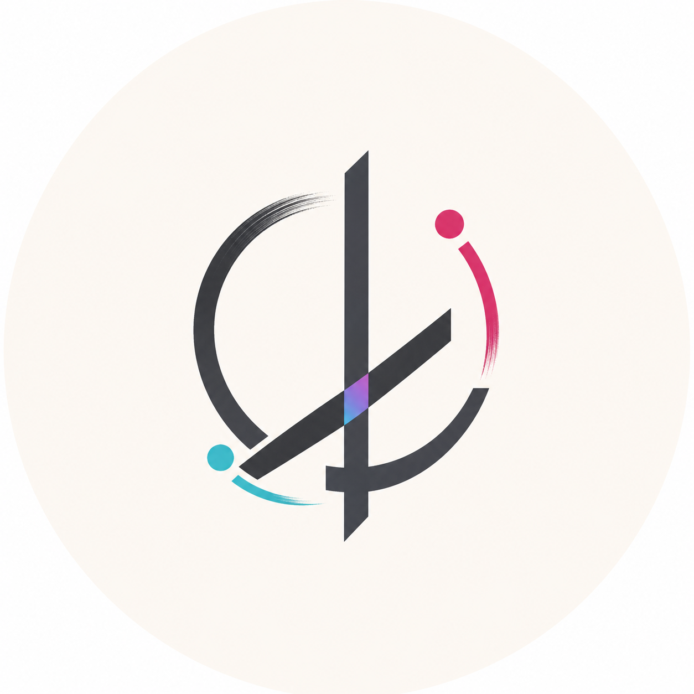

Software Engineer / Backend Developer
左刚华
软件工程师，专注后端开发，喜欢把复杂业务做成清晰、稳定、可维护的系统。
我熟悉后端服务、API 设计、数据库建模、异步任务和系统稳定性建设。主要使用 Ruby、Rails、Golang 等技术栈，也会关注工程效率、测试策略和线上问题排查。
这个站点会持续整理我的技术文章、项目实践和工作流记录。你可以在这里看到我如何拆解需求、 设计服务边界、权衡 Rails 与 Go 的使用场景，以及如何把后端系统打磨得更可靠。
近期写作
订阅更新项目
聊聊合作现在关注
Product Strategy
AI Workflow
Web Apps
Automation
Writing
Independent Products